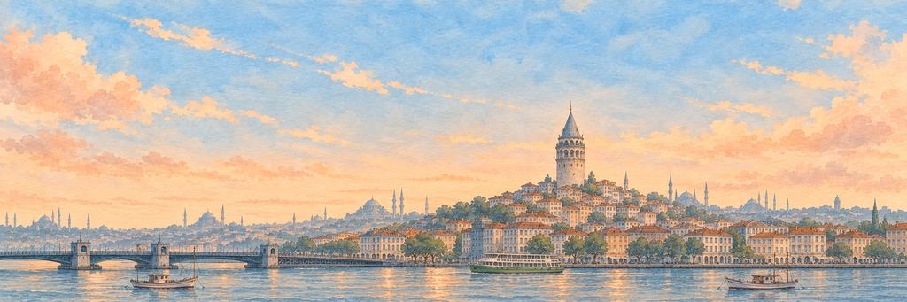
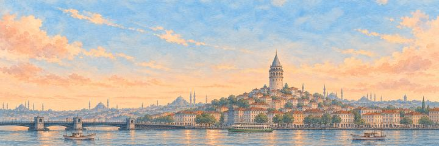
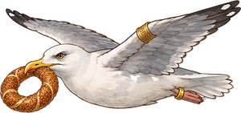
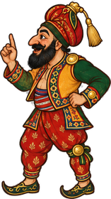

伊斯坦布尔 纸飞机游戏
从加拉太塔起飞，飞过海峡，一直飞到亚洲。
山坡一路落到水边。闯过芝麻圈海鸥，再闯过卡拉格兹。
横跨两大洲的城市
大约公元前 660 年，希腊移民在博斯普鲁斯海峡边建起了拜占庭。330 年，罗马皇帝君士坦丁把这里定为都城，叫君士坦丁堡。1453 年，奥斯曼人攻下了这座城，并在这里统治帝国将近五百年。如今的伊斯坦布尔横跨两大洲，海峡一边是欧洲，另一边是亚洲。
“我想扔一次就从欧洲飞到亚洲。”
地标加拉太塔
1348 年，热那亚商人在金角湾上方的山坡上建起了石头砌的加拉太塔。后来，奥斯曼人用它来观察满城的木房子有没有起火。据作家艾弗里雅·切莱比记载，大约 1630 年，一个叫赫扎尔芬·艾哈迈德·切莱比的人戴着自制的翅膀从塔顶跳下，滑翔飞过了博斯普鲁斯海峡。
街区
伊斯坦布尔有 39 个区，其中 25 个在欧洲，14 个在亚洲，人口约 1570 万。老城位于历史半岛上，据说和罗马一样建在七座山丘上。金角湾以北，独立大街穿过贝伊奥卢，从塔克西姆广场通到图奈尔广场（Tünel Square），长约 1.4 公里。在亚洲一侧的海岸，卡德柯伊位于迦克墩的旧址上，迦克墩是一座希腊城镇，建城比拜占庭早几年。
博斯普鲁斯海峡与金角湾
博斯普鲁斯海峡长约 31 公里，最窄处只有约 700 米宽。1973 年 10 月，海峡上的第一座大桥通车，那时距共和国成立正好 50 年。金角湾是一条约 7.5 公里长的狭窄海湾，在欧洲一侧形成一个避风港。490 米长的加拉太桥在金角湾口附近跨过海湾。少女塔立在于斯屈达尔外约 200 米的一座小岛上。
天际线
老城以穹顶和宣礼塔闻名。圣索菲亚大教堂建于 532 年至 537 年，当时是一座教堂，在将近一千年里一直是世界上最大的主教座堂。蓝色清真寺在 1616 年完工，有六座宣礼塔，内部贴着 2 万多块蓝色伊兹尼克瓷砖。苏莱曼尼耶清真寺由建筑师米马尔·希南设计，坐落在第三座山丘的顶上。在亚洲一侧，2021 年开放的恰姆勒贾塔高 369 米，是全市最高的建筑物。
何时去看
日落时站在加拉太桥上，穹顶和宣礼塔会在红色的天空下变成黑色的剪影。桥栏边一整天都站满了钓鱼的人。
谁在守护伊斯坦布尔的心愿。
精英守护者先醒来，首领守护者守着心愿本身。打中它们的弱点，会「砰！」一声；补上最后一击，就是「KO！」。然后它们都会笑着鞠躬。
-
精英


芝麻圈海鸥
从没付过芝麻圈钱 · 博斯普鲁斯渡轮的守护者
每天，伊斯坦布尔的海鸥都跟着渡轮飞过博斯普鲁斯海峡。乘客会把芝麻圈掰成小块扔给它们，这种撒满芝麻的面包圈在街边小推车上就能买到。最大胆的海鸥能在半空中接住，有的还直接从人手里叼走。
海鸥叼着芝麻圈抬起头，斜着眼瞅了瞅飞机。海鸥嘎地叫了一声，掉了一根羽毛，可芝麻圈还叼在嘴里。海鸥鞠了一躬。鸟群一下抢走了芝麻圈，它盯着自己空空的嘴。
“我要把我的芝麻圈留一块给它。”
-
首领

卡拉格兹
最后一句总归他说 · 金角湾的守护者
卡拉格兹是土耳其皮影戏里的主角，嗓门大，有话直说。每出戏里，他都要跟有学问的朋友哈吉瓦特争论，最后笑出声的通常是他。2009 年，卡拉格兹皮影戏被列入联合国教科文组织的人类非物质文化遗产名录。
卡拉格兹竖起一根手指，清了清嗓子，开始跟飞机争论。卡拉格兹一个踉跄，按住帽子，嘴里还在说。卡拉格兹终于不说话了，一把摘下帽子，深深鞠了一躬。
“我会让他说最后一句。”